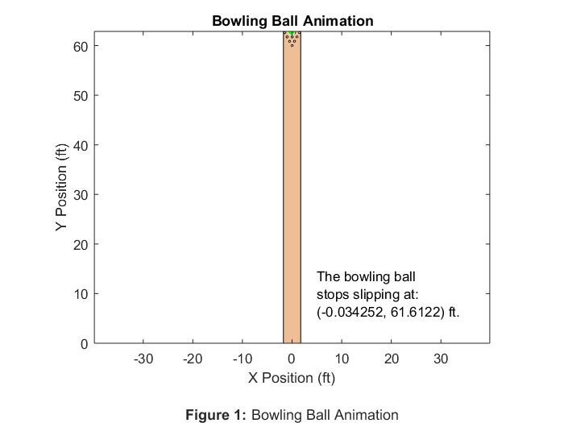

Rahul_Goyal_main Usage and Description
ME 326 Winter 2018 - Laboratory Assignment #4
Author: RAHUL GOYAL
California Polytechnic State University, San Luis Obispo, CA
Date Created: February 06, 2018
Date Modified: February 13, 2018
Description: This script simulates the motion of a bowling ball. It detects when the ball stops slipping and adjusts the acting friction accordingly. Additionally, it produces an animated GIF of the simulation in which the bowling ball changes its color from blue to green when it stops slipping.
Required Files:
- Integrator.slx - This file uses Simlunk to integrate a MATLAB Function Block which describes the equations of motion. It outputs x as xout (and the corresponding xdot and time values as xdot and tout, respectively) with inputs of the MATLAB function and initial conditions.
- BowlingBallEOM.m - This file contains a function that represents the equations of motion for the simulation. It returns xdot with an input of x.
- plot_lane.m - This file contains a function that generates a properly dimensioned plot of a lane including all ten pins.
Still To Do:
- Done!
Contents
Problem Statement
Consider a bowling ball thrown with an initial angular velocity w0 and an initial linear velocity v0 from the instant it makes contact with an alley lane. The velocity at the contact point, vC, is due to the velocity of the center of mass of the bowling ball, vB, and due to the relative velocity, vC/B, caused by the angular velocity of the bowling ball. The surface of the bowling alley will be defined as the xy-plane, where the y-axis extends down the alley and the x-axis extends toward the right gutter. The direction of the contact velocity is what determines the direction of the friction force. Angle theta is defined as the angle between the positive extension of the x-axis and the contact velocity vector. Therefore, when theta = pi/2 the ball will be traveling straight down the alley toward the pins.
The friction present between the ball and the smooth wooden lane is best approximated by a Coulomb friction model. That is F = mukN if the ball is slipping and F <= musN if the ball is rolling without slip. In each regime the friction force opposes the relative velocity (or impending relative velocity) at the contact point. In order to develop equations of motion, the magnitude and direction of the coulomb friction force must be computed, and then put into component form in the xy plane.
The bowling ball is modeled as a sphere of uniform density that weighs 15 lb and has a diameter of 8.5 in. The kinetic friction coefficient, muk, between the ball and surface is assumed to be 0.12 and the static friction coefficient, mus, between the ball and surface is assumed to be 0.14.
Reset
The following was used while debugging.
close all; clear all; clc;
Initial Conditions
The following sets the initial conditions of the bowling ball.
% Initial Conditions x_0 = [1.5; % Velocity[x] of ball (ft/s) 30; % Velocity[y] of ball (ft/s) 0; % Angular velocity[x] of ball (rad/s) -25; % Angular velocity[y] of ball (rad/s) 0; % Displacement[x] of ball (ft) 0]; % Displacement[y] of ball (ft)
Simulate the Bowling Ball Using Simulink
The following calls the Simulink file Integrator.slx, which outputs x as xout (and the corresponding xdot and time values as xdot and tout, respectively) with BowlingBallEOM.m as the input for the MATLAB Fuction and x_0 as the input for the initial conditions.
sim('Integrator');
Animation
The following animates the motion of the bowling ball. It plots the lane and the bowling ball (color dependent on whether the bowling ball is slipping). Additionally, it stores the frames of the animation (converted to images) for exporting them as an animated GIF afterwards.
% Calculate when the bowling ball stops slipping for t = 1:length(tout) % Acceleration[linear[x, y], angular[x, y]] a = xdot(t, 1:4); % (ft/s, ft/s, rad/s^2, rad/s^2) % If no slip, set bowling ball color to green if a == 0 % Set start of no-slip[x] x0_noslip = num2str(xout(t, 5)); % Set start of no-slip[y] y0_noslip = num2str(xout(t, 6)); break end end % Format start of no-slip position as text txt = char('The bowling ball', ... 'stops slipping at:', ... ['(', x0_noslip, ', ', y0_noslip, ') ft.']); % Plot the bowling ball on the lane for t = 1:length(tout) % If the bowling ball has traveled the lane length, finish lane_length = 62+(10+3/16)/12; % Lane length (ft) if xout(t, 6) > lane_length break; end % Plot the Lane plot_lane(); % Plot the lane ylim([0, lane_length]); % Set y-axis limits to lane length axis equal; % Scale x-axis and y-axis equally % Plot the Bowling Ball d = 8.5; % Given diameter (in) r = (d/2)/12; % Solved radius (ft) x = xout(t, 5); % X position of ball's center (ft) y = xout(t, 6); % Y position of ball's center (ft) % Acceleration[linear[x, y], angular[x, y]] a = xdot(t, 1:4); % (ft/s, ft/s, rad/s^2, rad/s^2) % If no slip, set bowling ball color to green if a == 0 color = 'g'; % Else, set bowling ball color to blue else color = 'b'; end % Draw the bowling ball viscircles([x, y], r, 'Color', color); % Calculate the time step and pause accordingly if t ~= length(tout) % Prevent index error % Calculate the time step (s) and store for later use t_step(t) = tout(t+1) - tout(t); % pause(t_step(t)); % Assume negligible processing time end % Format Plot title('Bowling Ball Animation'); xlabel({'X Position (ft)' '' % Figure label '\bfFigure 1: \rmBowling Ball Animation'}); ylabel('Y Position (ft)'); text(5, 10, txt); % Convert the plot frame to an image and store for later use image{t} = frame2im(getframe(1)); end
Export as GIF
The following exports the animation as an animated GIF.
file_name = 'BowlingBallAnimation.gif'; for i = 1:length(image) % Convert the RGB image to an indexed image [A, map] = rgb2ind(image{i}, 256); % If first iteration, also run setup code if i == 1 imwrite(A, map, file_name, ... 'LoopCount', inf, ... 'DelayTime', t_step(i)); % Else, append images else imwrite(A, map, file_name, ... 'WriteMode', 'append', ... 'DelayTime', t_step(i)); end end